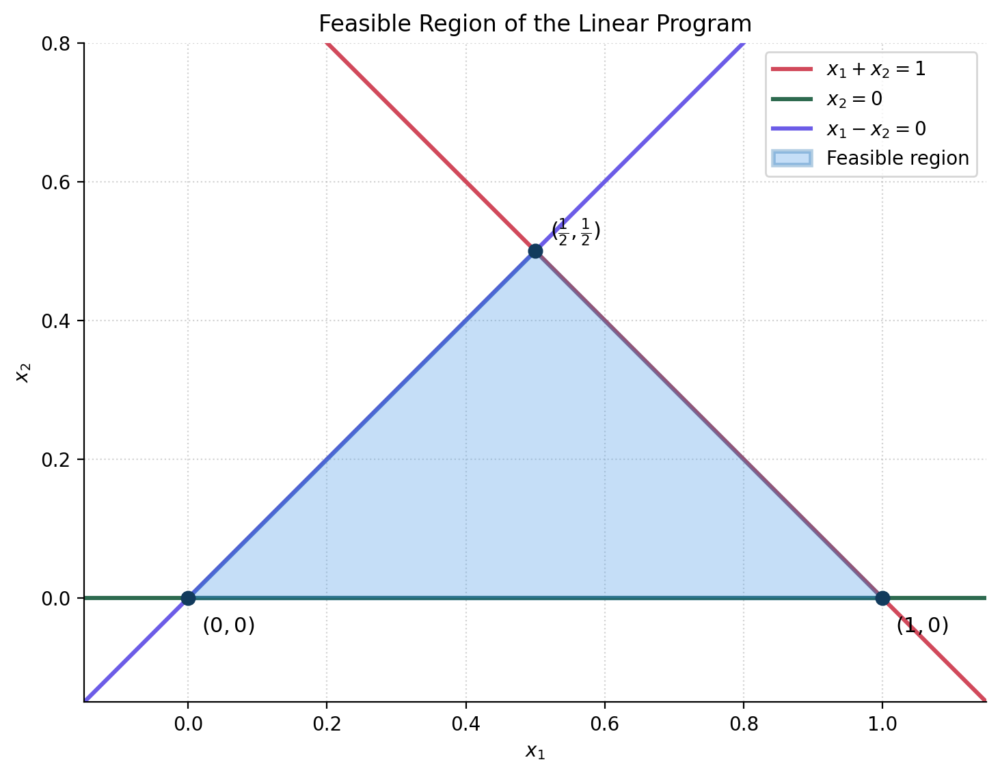

Introduction to Optimization
CO 250
Lecture 2
Kevin Shu
Lecture Outline
- Linear programming review
- Integer (Linear) Programs
Linear Programming Review
Linear Programming Review
A linear program is an optimization problem of the form
| min | $c^{\intercal}x$ |
| such that | $Ax \le b$ |
$A$ is an $m \times n$ matrix, $b \in \R^m$, $c,x \in \R^n$.
The min can also be a max, and we can mix $\le$ and $\ge$ in the constraints. These changes can be made by flipping signs.
Linear Programming Review
The following is an LP
| max | $x_2$ |
| such that | $ x_1 + x_2 \le 1$ |
| $x_1 - x_2 \ge 0$ | |
| $x_2 \ge 0.$ |

Diet Problem
| Nutrient | Egg | Banana | Chicken Breast |
|---|---|---|---|
| Calories | 72 kcal | 105 kcal | 128 kcal |
| Protein | 6.3 g | 1.3 g | 26 g |
| Carbohydrates | 0.4 g | 27 g | 0 g |
We can format this data into a matrix $A$.
The daily recommended values can be formatted into a matrix $b$.
A feasible point satisfies $Ax \ge b$.
Diet Problem
Solving the Diet Problem
Linear programs scale extremely well: we can solve one with thousands of foods in a fraction of a second.
Linear Programming Review
Given a linear program
| min | $c^{\intercal}x$ |
| such that | $Ax \le b$ |
A feasible point is a point satisfying the constraints $Ax \le b$.
An optimal point is a feasible point $x$ so that for any other feasible $y$, $c^{\intercal}x \le c^{\intercal}y$.
Linear Programming Review
Given a linear program
| min | $x_1$ |
| such that | $x_1 \le 0$ |
This is feasible, for example $x_1 = 0$ is feasible.
There is no optimal point because the constraints allow $x_1$ to be arbitrarily small.
Linear Programming Review
The following is an LP
| max | $x_2$ |
| such that | $ x_1 + x_2 \le 1$ |
| $x_1 - x_2 \ge 0$ | |
| $x_2 \ge 0.$ |
There is an optimal point for this problem at $(x_1, x_2) = (\frac{1}{2},\frac{1}{2})$.
Linear Programming Review
The variables in a linear program are continuous in nature.
Linear programs have a harder time capturing discrete decisions.
Linear Programming Review
Linear programs have a harder time capturing discrete decisions.
Note that the solution to the diet problem has fractional values.
If we are trying to decide what to buy at the grocery store, this may be an issue.
More than Linear Programming
The Cafeteria Problem
A cafeteria offers a number of different options for what to eat.
For each food option, you can either take some or not, but you can't take part of a food.
More than Linear Programming
The Cafeteria Problem
Say that there are $N$ food options.
As in linear programming, we want to have a variable $x_i$ for each $i = 1,\dots,N$ that represents our decisions.
What should this variable look like?
More than Linear Programming
Indicator Variables
We want to model binary decisions: $x_i$ should take on two values.
An indicator variable is a variable that only on values of $0$ or $1$ (and not anything in between).
Indicator variables are very useful for describing binary decisions. For example, we can count the number of positive decisions we make by adding up indicator variables.
More than Linear Programming
The Cafeteria Problem
Say that we have a budget of $B$ and food $i$ costs $c_i$.
We can't spend more than our budget: \[ \sum_{i=1}^N c_i x_i \le B. \]
Now suppose each food $i$ has a value $v_i$. What should we maximize?
Our objective is \[ \text{max }\sum_{i=1}^N v_i x_i. \]
More than Linear Programming
The Cafeteria Problem
Overall, our problem becomes
| max | $\sum_{i=1}^N v_i x_i$ |
| such that | $\sum_{i=1}^N c_i x_i \le B$ |
| $x_i \in \{0,1\}$ |
This will be our first example of an integer linear program.
Integer Linear Programming
Integer Linear Programming
An integer linear program (ILP) is an optimization problem of the form
| min | $c^{\intercal}x$ |
| such that | $Ax \le b$ |
| $x \in \Z$ |
Here, $x \in \Z$ means that each entry of $x$ is an integer.
More generally, we can let some variables be continuous and others discrete.
ILP Examples
| min | $x_1$ |
| such that | $2x_1 + 3x_2 \le 3$ |
| $x_1, x_2 \ge 0$ | |
| $x \in \Z$ |

Which points are feasible for the ILP?
There are three integral points: $(0,0)$, $(1,0)$, and $(0,1)$.
Note that the linear program would have $(1.5,0)$ as a vertex.
Integer Linear Programming
Integer programs are much more expressive than linear programs; they can express 'logical constraints'.
We can express that one indicator variable implies another one: \[ x_i \le y_i. \]
We can express that a constraint may be turned on or off depending on an indicator is true or false. \[ a^{\intercal}x \le b \rightarrow a^{\intercal}x \le b + Mz_i, \] where $M$ is a large number to make sure that any feasible $x$ will satisfy this is true if $z_i = 1$.
ILP Examples
The Cafeteria Problem
Note that the Cafeteria problem can be described as an integer program.
| max | $\sum_{i=1}^N v_i x_i$ |
| such that | $\sum_{i=1}^N c_i x_i \le B$ |
| $x_i \in \{0,1\}$ |
ILP Examples
The Cafeteria Problem
Note that the Cafeteria problem can be described as an integer program.
| max | $\sum_{i=1}^N v_i x_i$ |
| such that | $\sum_{i=1}^N c_i x_i \le B$ |
| $0 \le x_i \le 1$ | |
| $x_i \in \Z$ |
This problem is more often called the knapsack problem.
ILP Examples
Warehouse Allocation
Food Corp. is looking to decide where to build warehouses to service some grocery locations in the city of Brockton Bay.
There are 3 locations in the Brockton Bay that are available to open a warehouse: North, South, and East.
There are 4 stores in Brockton Bay that need to be serviced, numbered 1 through 4.
Each store should be assigned to one warehouse.
ILP Examples
Warehouse Allocation
Costs of opening warehouses and transportation costs of going to different stores.
| Location | Cost | Store 1 | Store 2 | Store 3 | Store 4 |
| North | 12 | 2 | 4 | 18 | 22 |
| South | 15 | 10 | 7 | 8 | 11 |
| East | 12 | 22 | 17 | 4 | 2 |
ILP Examples
Warehouse Allocation
What are the decision variables?
Which warehouses do we open? Let $x_i$ be 1 if the warehouse is open and 0 otherwise.
Which warehouses should be connected to which grocery stores? Let $y_{ij}$ be 1 if warehouse $i$ is connected to grocery store $j$.
ILP Examples
Warehouse Allocation
What are the constraints?
If warehouse $i$ is closed, then no grocery stores connect to it.
For all $i$ and $j$, $y_{ij} \le x_i$.
Each grocery store should be connected to exactly one warehouse.
For all $j$, $\sum_{i=1}^3y_{ij} = 1$.
ILP Examples
Warehouse Allocation
What is the objective?
Minimize $\sum_{i=1}^3 c_i x_i + \sum_{i=1}^3 \sum_{j=1}^4 d_{ij}y_{ij}$
ILP Examples
Warehouse Allocation
Assembling
| min | $\sum_{i=1}^3 c_i x_i + \sum_{i=1}^3 \sum_{j=1}^4 d_{ij}y_{ij}$ |
| such that | $y_{ij} \le x_i$ |
| $\sum_{i=1}^3 y_{ij} = 1$ | |
| $0 \le x_i \le 1$ | |
| $0 \le y_{ij} \le 1$ | |
| $x_i, y_{ij} \in \Z$ |
ILP Examples
Cookie Assembly
We have a number of cookies that we need to bake. We want to put all of the cookies on a baking sheet without overlapping.
For simplicity, we will imagine that each cookie is a rectangle (though we can model other shapes easily).
We will also want to discretize each rectangle, so that they are composed of small square `pixels'.
ILP Examples
Cookie Assembly Setup
Say we are given $K$ cookie sheets, each one of size $\ell \times w$.
We also have $B$ cookies, and cookie $i$ is a rectangle of size $a_i \times b_i$.
What decisions do we need to make?
ILP Examples
Cookie Assembly Decision Variables
First, we decide whether to use each cookie sheet.
Let $y_k$ be a variable that is 1 if cookie sheet $k$ is used, and 0 otherwise, for $k = 1,\dots, K$.
ILP Examples
Cookie Assembly Decision Variables
Second, we decide where each cookie goes.
Cookie $i$ can have its top left corner at location $(r,c)$ on sheet $k$ whenever $r \le \ell - a_i + 1$ and $c \le w - b_i + 1$.
For each such location, include a variable $x_{ikrc}$ that is 1 if we put cookie $i$ there and 0 otherwise.
ILP Examples
Cookie Assembly Constraints
We must put each cookie in exactly one location, so for each $i \le K$, \[ \sum_{k=1}^C \sum_{r = 1}^{\ell - a_i + 1}\sum_{c = 1}^{w - b_i + 1} x_{ikrc} = 1. \]
What keeps two cookies from overlapping?
ILP Examples
Cookie Assembly Constraints
We can only place one cookie in each cell of a sheet that is used.
So for each $k = 1, \dots, K$, each $r = 1,\dots,\ell$, and each $c = 1,\dots,w$, \[ \sum_{i}^K \sum_{r' = r-a_i+1}^{r}\sum_{c' = c-b_i+1}^{c} x_{ikr'c'} \le y_k. \]
Notice how this ties the placement variables back to $y_k$: a cell can only be filled on a sheet we actually use.
ILP Examples
Cookie Assembly Decision Constraints
The objective here is simple; we want to use as few cookie sheets as possible, which is given by $\sum_{k=1}^K y_k$.
Assembling
| min | $\sum_{k=1}^K y_k$ | |
| such that | $ \sum_{k=1}^K \sum_{r = 1}^{\ell - a_i + 1}\sum_{c = 1}^{w - b_i + 1} x_{ikrc} = 1 $ | for $i=1,\dots,B$ |
| $ \sum_{i}^K \sum_{r' = r-a_i+1}^{r}\sum_{c' = c-b_i+1}^{c} x_{ikr'c'} \le y_k $ | for each $k =1,\dots,K$ | |
| $0 \le x_{ikrc} \le 1$ | ||
| $0 \le y_k \le 1$ | ||
| $x_{ikrc}, y_k \in \Z$ |
Packing vs Covering
Some problems put items into a container. Others cover an object with items.
A packing IP is an optimization problem
| max | $c^{\intercal} x_i$ |
| such that | $Ax \le b$ |
| $x \ge 0$ | |
| $x_i \in \Z$ |
where $A$ and $c$ have only nonnegative entries.
The upper bounds say that we can only make the entries of $x$ so large before they `overflow' the packing bound. Our goal is to maximize our value from the packing.
Packing vs Covering
Some problems put items into a container. Others cover an object with items.
A covering IP is an optimization problem
| min | $c^{\intercal} x_i$ |
| such that | $Ax \ge b$ |
| $x \ge 0$ | |
| $x_i \in \Z$ |
where $A$ and $c$ have only nonnegative entries.
The lower bounds say that we have to make the entries of $x$ large enough to `cover' the bounds. Our goal is to minimize the cost of the packing.
This is `dual' to a packing IP.
Packing vs Covering
Which of today's examples were packing, and which were covering?
The knapsack and cookie problems are packing: $Ax \le b$, maximizing.
The diet problem is covering: $Ax \ge b$, minimizing.
Packing vs Covering
ILPs can be neither packing nor covering ILPs.
| min | $x_1 + x_2 - x_3$ |
| such that | $x_1 + x_2 \ge 2$ |
| $x_1 - x_3 \le 3$ | |
| $x_1, x_2, x_3 \in \Z$ |
Solving ILPs
ILPs are typically much harder to solve than LPs.
LPs with millions of variables and constraints can be solved very quickly.
There are ILPs with hundreds of variables that likely will never be solved exactly.
Building new solvers for ILPs is a large industry.